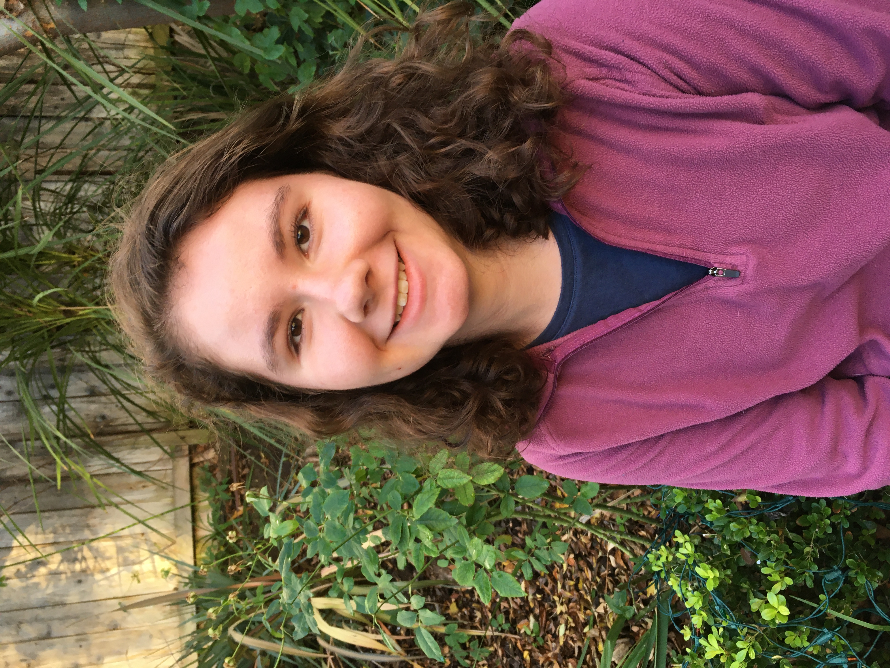

My journey in museums began as a volunteer interpreter at the Jamestown Settlement museum and since than I have served in numerous museum as a volunteer, intern, full-time staff memeber, or consultant. Through my experiences, I learned the value of storytelling and creating a connection between the themes and objects presented in the exhibits and the audience. I have developed a passion not only for creating immersive and engaging experiences that educate and connect with a diverse audience, but also for caring for the objects within the collections.
My goal with this website is to share my expertise with museums, galleries, personal collectors, and anyone with a story to be preserved. Above all, I love storytelling and I work diligently to ensure all stories are documented and shared.
I would love to work with you on your project!